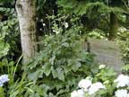
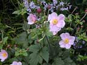
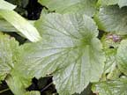
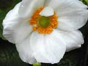

Japanese anenome
Anemona x hybrida
Other names
Japanese windflower
Description
Erect branching herb with stems up to I m tall. Soft and downy with thin hairs. Leaves are arranged in threes, much toothed and lobed, basal leaves lobed or divided while upper leaf form an involucre from which come pink, rosy or white flowers on long peduncles. Sepals in 1 3 whorls up to 8cm in diameter. The fruit is a silky achene.
Similar plants
There are several species of anenome in NZ; all are probably poisonous.
Distribution
Normally found growing in gardens but may escape and persist.
Toxin
Enzymatic hydrolysis of the glycoside ranunculin releases gamma lactone protoanemonin toxin (as in buttercups), which irritates the mucous membranes and causes inflammation of the intestinal tract. Poisonous principle not active when the plant is dried.
Species affected
A risk to grazing livestock. No recorded poisonings in New Zealand.
Clinical signs acute
Inflammation of mucous membranes, May include colic, salivation, blackened faeces, haematuria and blindness.
Clinical signs chronic
Post mortem signs
Findings of irritation enteritis, alimentary tract, small intestine and abomasum. Diffuse patches of inflammation in the wall of the rumen. Pulmonary oedema and congestion.
Diagnosis
History and clinical signs.
Differential diagnosis
Other members of the family Ranunculacaea. Melaena can be caused by aflatoxins, arsenic and other metal toxicity. Salivation will occur in most animals with an enteric irritation. Ammonia, Mercury, Organophosphates, Slaframine.
Treatment
Unknown. Supportive therapy indicated.
Prognosis
Some anemones are known to be very toxic with a guarded prognosis however no poisonings have been known to occur in New Zealand.
Prevention
Avoid grazing plants. Use weed control measures.
References
Conner H.E. The Poisonous Plants In New Zealand. 1992. GP Publications Ltd, Wellington
Cooper M R, Johnson A W. Poisonous Plants and Fungi in Britan: Animals and Human Poisoning. Her Majesty’s Stationary Office. London. 1998
Parton K, Bruere A.N. and Chambers J.P. Veterinary Clinical Toxicology, 2nd ed. 2001. Veterinary Continuing Education Publication No. 208
|  plant |
 |
|
|
 |
 |
|
|
|
||
|
|
|
|